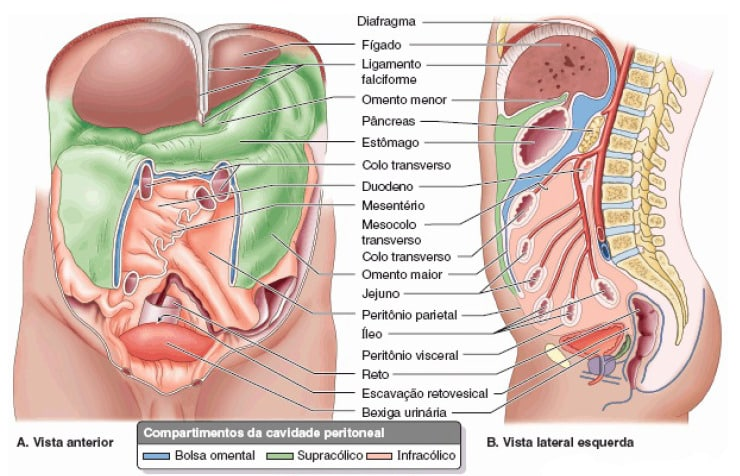
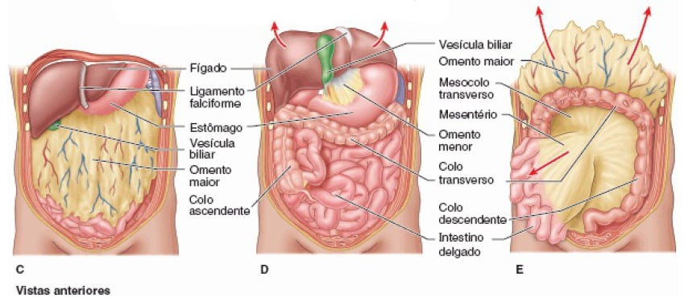
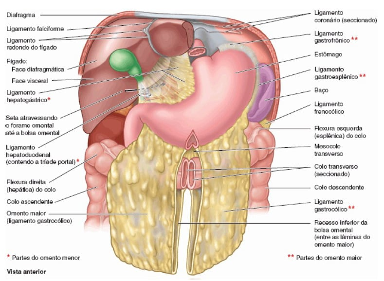

Dentro da cavidade abdominal, uma membrana de dupla camada chamada peritônio, suporta a maioria das vísceras abdominais e auxilia na sua fixação na parede abdominal.
O omento maior e menor são duas estruturas que consistem em peritônio dobrado sobre si mesmo (duas camadas de peritônio – quatro camadas de membrana).
Ambos se ligam ao estômago e são marcos anatômicos úteis.

MOORE: Keith L. Anatomia orientada para a clínica. 7 ed. Rio de Janeiro: Guanabara Koogan, 2014.

MOORE: Keith L. Anatomia orientada para a clínica. 7 ed. Rio de Janeiro: Guanabara Koogan, 2014.
Omento maior
Vai do estômago e da parte proximal do duodeno até os órgãos adjacentes na cavidade abdominal.
Fica pendurado na curvatura maior do estômago e se dobra sobre si mesmo, onde se liga ao cólon transverso.
Ele contém muitos linfonodos e pode aderir a áreas inflamadas, desempenhando, portanto, um papel fundamental na imunidade gastrointestinal e minimizando a disseminação intraperitoneal e infecções.
NETTER: Frank H. Netter Atlas De Anatomia Humana. 8 ed. Rio de Janeiro: Elsevier, 2024.
Omento menor
É contínuo com as camadas peritoneais do estômago e do duodeno.
Essa prega peritoneal menor surge na curvatura menore sobe para se ligar ao fígado.
Também une o estômago a uma tríade de estruturas que seguem entre o duodeno e o fígado na margem livre do omento menor.
A principal função do omento menor é anexar o estômago e o duodeno ao fígado.

MOORE: Keith L. Anatomia orientada para a clínica. 7 ed. Rio de Janeiro: Guanabara Koogan, 2014.